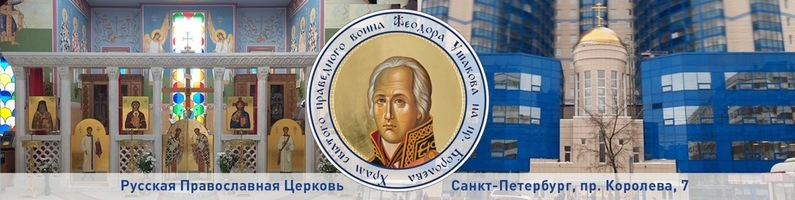

27 февраля 2015 года "Мы становимся близки Богу, когда причащаемся" - диаконская хиротония чтеца Александра Стебенева
5 августа 2016 года "В храме святого Феодора Ушакова отметили престольный праздник" - престольный праздник в день 15-ти летия прославления адмирала Феодора Ушакова
16 декабря 2018 года "Соблюдать заповеди" - освящение храма высокопреосвященнейшим Варсонофием, митрополитом Санкт-Петербургским и Ладожским, и иерейская хиротония диакона Александра Стебенева
25 апреля 2020 года "Господь с нами" - всенощное бдение с награждением настоятеля
12 июля 2020 года "День ангела города" - диаконская хиротония чтеца Сергия Белова
23 октября 2021 года "Гонениям вопреки" - всенощное бдение с награждением настоятеля и иерея Александра Стебенева
15 мая 2022 года "Небесный Врач" - награждение иерея Александра Стебенева
ВИДЕО:
Лекторий в "Атриуме". Литургическое Богословие. иеромонах Игнатий (Юрченков)
Беседы с батюшкой. Литургия в первые века христианства. Эфир от 19 апреля 2018г
Беседы с батюшкой. Вещества для Литургии - хлеб и вино. Эфир от 11 января 2018г
Беседы с батюшкой. Литургика. Эфир от 9 июля 2015г
Беседы с батюшкой. Суеверия. Эфир от 13 ноября 2015г
Беседы с батюшкой. Богородица в православном богослужении. Эфир от 28 августа 2015г
Союз онлайн: Храм праведного воина Феодора Ушакова. Часть 1
Союз онлайн: Храм праведного воина Феодора Ушакова. Часть 2
Союз онлайн: Храм праведного воина Феодора Ушакова. Часть 3
Союз онлайн: Храм праведного воина Феодора Ушакова. Часть 4
Союз онлайн: Храм праведного воина Феодора Ушакова. Часть 5
Союз онлайн: Храм праведного воина Феодора Ушакова. Часть 6
Союз онлайн: Храм праведного воина Феодора Ушакова. Часть 7
Союз онлайн: Храм праведного воина Феодора Ушакова. Часть 8
Союз онлайн: Храм праведного воина Феодора Ушакова. Часть 9
Союз онлайн: Храм праведного воина Феодора Ушакова. Часть 10